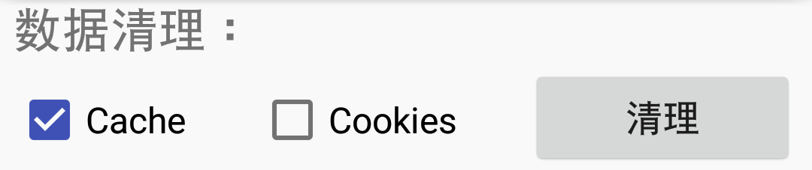
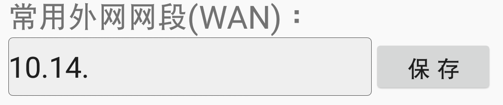
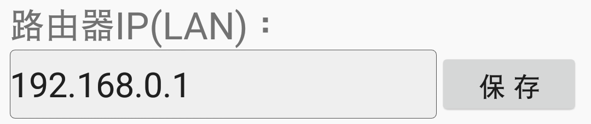

数据清理是指清理内置浏览器缓存数据。Cache可以随意清理，但注意，清理Cookies后，登录路由器需要重新输入用户名和密码

APP启动时，此栏的内容会自动填入主页面中的“IP地址”栏。若此栏为空，主页面中的“IP地址”栏会自动填入“IP地址”栏上次登录的内容

此栏指路由器内网IP，也叫网关，即你平时登录路由器界面时，需要在浏览器输入的IP地址。当此栏为空时，APP将自动识别路由器IP